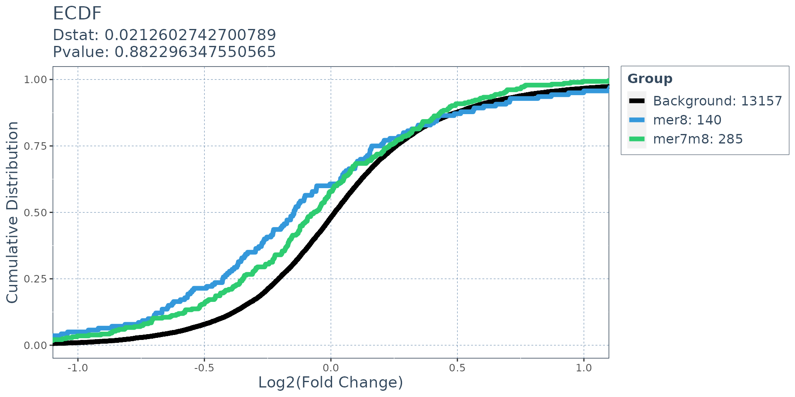
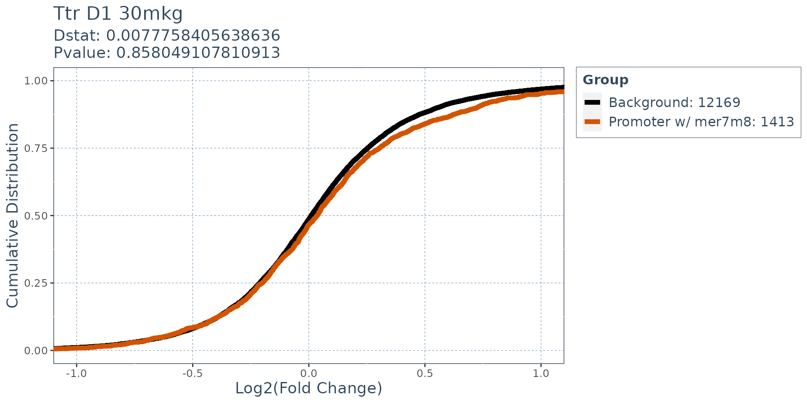

Find Matches to Canonical siRNA Seeds in Genomic Features with SeedMatchR
Tareian Cazares and Gulcin Ozer
SeedMatchR.RmdAbstract
On-target gene knockdown using siRNA ideally results from binding fully complementary regions in mRNA transcripts to induce cleavage. Off-target siRNA gene knockdown can occur through several modes, one being a seed-mediated mechanism mimicking miRNA gene regulation. Seed-mediated off-target effects occur when the ~8 nucleotides at the 5’ end of the guide strand, called a seed region, bind the 3’ untranslated regions of mRNA, causing reduced translation. Experiments using siRNA knockdown paired with RNA-seq can be used to detect siRNA sequences with potential off-target effects driven by the seed region. SeedMatchR provides tools for exploring and detecting potential seed-mediated off-target effects of siRNA in RNA-seq experiments. SeedMatchR is designed to extend current differential expression analysis tools, such as DESeq2, by annotating results with predicted seed matches. Using publicly available data, we demonstrate the ability of SeedMatchR to detect cumulative changes in differential gene expression attributed to siRNA seed regions.
Installation
You can install the development version of SeedMatchR from GitHub or the stable build from CRAN.
# Install from GitHub
install.packages("devtools")
devtools::install_github("tacazares/SeedMatchR")Quick start example with public siRNA data
Introduction to example dataset
This example uses the siRNA sequence, D1, targeting the Ttr gene in rat liver from the publication:
Schlegel MK, Janas MM, Jiang Y, Barry JD, Davis W, Agarwal S, Berman D, Brown CR, Castoreno A, LeBlanc S, Liebow A, Mayo T, Milstein S, Nguyen T, Shulga-Morskaya S, Hyde S, Schofield S, Szeto J, Woods LB, Yilmaz VO, Manoharan M, Egli M, Charissé K, Sepp-Lorenzino L, Haslett P, Fitzgerald K, Jadhav V, Maier MA. From bench to bedside: Improving the clinical safety of GalNAc-siRNA conjugates using seed-pairing destabilization. Nucleic Acids Res. 2022 Jul 8;50(12):6656-6670. doi: 10.1093/nar/gkac539. PMID: 35736224; PMCID: PMC9262600.The guide sequence of interest is 23 bp long and oriented 5’ -> 3’.
# siRNA sequence of interest targeting a 23 bp region of the Ttr gene
guide.seq = "UUAUAGAGCAAGAACACUGUUUU"Required Input Data
The required inputs to SeedMatchR are a DESeq2 results
data frame in addition to species specific annoation data such as GTF,
2bit DNA, and 3’ UTR sequences.
SeedMatchR makes extensive use of
AnnotationDB objects to help access genomic information in
a reproducible manner. The required annotations are:
- A character string representing the siRNA RNA sequence. This must be greater than 8 bp.
-
res: a data frame of DESEQ2 results. -
GTF: gene transfer file containing species specific genomic information for gene bodies. This is used to derive the list of 3’ UTRs and other features used in the analysis. This is also used to map transcript IDs to gene IDs. - Feature-specific
DNAStringSet: ADNAStringSetobject of sequences for each of the features of interest. The features must be named according to the transcript they were derived from. Examples include those generated byGenomicFeatures::extractTranscriptSeqs()paired with functions likeGenomicFeatures::threeUTRsByTranscript().
Prepare species-specific annotation data
The function load_species_anno_db() has built in
annotation data for human, rat, and mouse annotations. We can load the
species specific annotations using the following approach:
# Load the species specific annotation database object
anno.db <- load_species_anno_db("rat")Extract features and sequences of interest from annotations
We will use the annotations to derive the features and feature sequences that we want to scan for each gene.
features = get_feature_seqs(anno.db$tx.db, anno.db$dna, feature.type = "3UTR")Prepare DESEQ2 Results
SeedMatchR assumes that you will be performing your
analysis on DESEQ2 results outputs. The first step is to load your
DESEQ2 results file as a data frame.
The test data that is provided with SeedMatchR was
derived from the 2022 publication by Schlegel et al. The data set
represents a DESeq2 analysis performed on rat liver that had been
treated with Ttr targeting siRNA. We will use this example to explore
seed mediated activity. The data set name is long, so it will be renamed
to res.
Download data (only need to perform once)
We start by downloading the example data set. This function will download three files from the GEO accession GSE184929. These files represent three samples with different siRNA treatments at two dosages.
get_example_data("sirna")Load example data
We can load the example data into the environment.
load_example_data("sirna")The DESeq2 results are available through the names
Schlegel_2022_Ttr_D1_30mkg,
Schlegel_2022_Ttr_D4_30mkg and
Schlegel_2022_Ttr_D1_10mkg. The data set name is long, so
it will be renamed to res.
res <- Schlegel_2022_Ttr_D1_30mkgThe DESeq2 results file is then filtered. The function
filter_deseq() can be used to filter a results file by
log2FoldChange, padj, baseMean, and remove NA entries.
# Dimensions before filtering
dim(res) # [1] 32883 6
#> [1] 32883 8
# Filter DESeq2 results for SeedMatchR
res = filter_deseq(res, fdr.cutoff=1, fc.cutoff=0, rm.na.log2fc = TRUE)
# Dimensions after filtering
dim(res) # [1] 13582 8
#> [1] 13582 8Plot possible seeds
Use the plot_seeds() function to visualize the available
SeedMatchR options for your input sequence of interest. The only input
to plot_seeds() is your input siRNA sequence of interest.
This function assumes that you are using a RNA input.
# Plot the seed sequence options for the siRNA of interest
avail.seed.plot = plot_seeds(guide.seq)
#> use default substitution matrix
#> Registered S3 methods overwritten by 'ggalt':
#> method from
#> grid.draw.absoluteGrob ggplot2
#> grobHeight.absoluteGrob ggplot2
#> grobWidth.absoluteGrob ggplot2
#> grobX.absoluteGrob ggplot2
#> grobY.absoluteGrob ggplot2
#> Scale for x is already present.
#> Adding another scale for x, which will replace the existing scale.
avail.seed.plotGet the seed sequence of interest
You can extract the seed sequence information from the siRNA input
sequence using the get_seed() function. The inputs to the
get_seed() function in the siRNA sequence of interest and
the name of the seed.
# Get the seed sequence information for the seed of interest
seed = get_seed(guide.seq, "mer7m8")
seed
#> $Guide
#> 23-letter RNAString object
#> seq: UUAUAGAGCAAGAACACUGUUUU
#>
#> $Seed.Name
#> [1] "mer7m8"
#>
#> $Seed.Seq.RNA
#> 7-letter RNAString object
#> seq: UAUAGAG
#>
#> $Seed.Seq.DNA
#> 7-letter DNAString object
#> seq: TATAGAG
#>
#> $Target.Seq
#> 7-letter DNAString object
#> seq: CTCTATACounting seed matches in transcripts
You can perform a seed match for a single seed using the
SeedMatchR() function.
res = SeedMatchR(res,
anno.db$gtf,
features$seqs,
guide.seq)
head(res)
#> gene_id baseMean log2FoldChange lfcSE stat pvalue
#> 1 ENSRNOG00000016275 2138.0945 -8.164615 NA -23.61818 2.507268e-123
#> 2 ENSRNOG00000000127 437.6342 -1.346927 0.1068629 -12.60425 2.000712e-36
#> 3 ENSRNOG00000047179 1590.1745 -1.262411 0.1031403 -12.23974 1.906387e-34
#> 4 ENSRNOG00000030187 131.9206 3.422725 0.3032352 11.28736 1.515189e-29
#> 5 ENSRNOG00000008050 38.9921 -3.442834 0.3192776 -10.78320 4.132589e-27
#> 6 ENSRNOG00000008816 400.9526 2.794453 0.2661369 10.50006 8.632549e-26
#> padj symbol mer7m8
#> 1 3.405371e-119 Ttr 1
#> 2 1.358683e-32 Kpna6 0
#> 3 8.630849e-31 Aplp2 1
#> 4 5.144824e-26 Mmp12 0
#> 5 1.122577e-23 Stac3 0
#> 6 1.954121e-22 Gpnmb 0Match multiple seeds
You can perform seed matching for all available seeds using a for loop. The results will be appended as a new column to the results data frame.
for (seed in c("mer8", "mer6", "mer7A1")){
res <- SeedMatchR(res,
anno.db$gtf,
features$seqs,
guide.seq,
seed.name = seed)
}
head(res)
#> gene_id baseMean log2FoldChange lfcSE stat pvalue
#> 1 ENSRNOG00000016275 2138.0945 -8.164615 NA -23.61818 2.507268e-123
#> 2 ENSRNOG00000000127 437.6342 -1.346927 0.1068629 -12.60425 2.000712e-36
#> 3 ENSRNOG00000047179 1590.1745 -1.262411 0.1031403 -12.23974 1.906387e-34
#> 4 ENSRNOG00000030187 131.9206 3.422725 0.3032352 11.28736 1.515189e-29
#> 5 ENSRNOG00000008050 38.9921 -3.442834 0.3192776 -10.78320 4.132589e-27
#> 6 ENSRNOG00000008816 400.9526 2.794453 0.2661369 10.50006 8.632549e-26
#> padj symbol mer7m8 mer8 mer6 mer7A1
#> 1 3.405371e-119 Ttr 1 1 1 1
#> 2 1.358683e-32 Kpna6 0 0 0 0
#> 3 8.630849e-31 Aplp2 1 0 1 0
#> 4 5.144824e-26 Mmp12 0 0 0 0
#> 5 1.122577e-23 Stac3 0 0 0 0
#> 6 1.954121e-22 Gpnmb 0 0 0 0Match seeds with mismatches and indels allowed
You can also allow for inexact seed matches in your analysis with the
mismatches and indels arguments. The names can
be adjusted to reflect the arguments using the col.name
argument.
for (indel.bool in c(TRUE, FALSE)){
for (mm in c(0,1,2)){
for (seed in c("mer7m8", "mer8", "mer6", "mer7A1")){
res <- SeedMatchR(res,
anno.db$gtf,
features$seqs,
guide.seq,
seed.name = seed,
col.name = paste0(seed, ".", "mm", mm, "_indel", indel.bool),
mismatches = mm,
indels = indel.bool)
}
}
}
head(res)
#> gene_id baseMean log2FoldChange lfcSE stat pvalue
#> 1 ENSRNOG00000016275 2138.0945 -8.164615 NA -23.61818 2.507268e-123
#> 2 ENSRNOG00000000127 437.6342 -1.346927 0.1068629 -12.60425 2.000712e-36
#> 3 ENSRNOG00000047179 1590.1745 -1.262411 0.1031403 -12.23974 1.906387e-34
#> 4 ENSRNOG00000030187 131.9206 3.422725 0.3032352 11.28736 1.515189e-29
#> 5 ENSRNOG00000008050 38.9921 -3.442834 0.3192776 -10.78320 4.132589e-27
#> 6 ENSRNOG00000008816 400.9526 2.794453 0.2661369 10.50006 8.632549e-26
#> padj symbol mer7m8 mer8 mer6 mer7A1 mer7m8.mm0_indelTRUE
#> 1 3.405371e-119 Ttr 1 1 1 1 1
#> 2 1.358683e-32 Kpna6 0 0 0 0 0
#> 3 8.630849e-31 Aplp2 1 0 1 0 1
#> 4 5.144824e-26 Mmp12 0 0 0 0 0
#> 5 1.122577e-23 Stac3 0 0 0 0 0
#> 6 1.954121e-22 Gpnmb 0 0 0 0 0
#> mer8.mm0_indelTRUE mer6.mm0_indelTRUE mer7A1.mm0_indelTRUE
#> 1 1 1 1
#> 2 0 0 0
#> 3 0 1 0
#> 4 0 0 0
#> 5 0 0 0
#> 6 0 0 0
#> mer7m8.mm1_indelTRUE mer8.mm1_indelTRUE mer6.mm1_indelTRUE
#> 1 1 1 2
#> 2 11 3 29
#> 3 3 2 12
#> 4 0 0 6
#> 5 1 1 1
#> 6 1 0 7
#> mer7A1.mm1_indelTRUE mer7m8.mm2_indelTRUE mer8.mm2_indelTRUE
#> 1 1 4 2
#> 2 7 94 21
#> 3 6 38 15
#> 4 4 18 6
#> 5 1 4 2
#> 6 1 18 6
#> mer6.mm2_indelTRUE mer7A1.mm2_indelTRUE mer7m8.mm0_indelFALSE
#> 1 14 6 1
#> 2 204 58 0
#> 3 101 38 1
#> 4 41 16 0
#> 5 14 8 0
#> 6 50 20 0
#> mer8.mm0_indelFALSE mer6.mm0_indelFALSE mer7A1.mm0_indelFALSE
#> 1 1 1 1
#> 2 0 0 0
#> 3 0 1 0
#> 4 0 0 0
#> 5 0 0 0
#> 6 0 0 0
#> mer7m8.mm1_indelFALSE mer8.mm1_indelFALSE mer6.mm1_indelFALSE
#> 1 1 1 1
#> 2 6 3 18
#> 3 3 2 12
#> 4 0 0 2
#> 5 1 1 1
#> 6 1 0 6
#> mer7A1.mm1_indelFALSE mer7m8.mm2_indelFALSE mer8.mm2_indelFALSE
#> 1 1 3 1
#> 2 6 39 12
#> 3 6 22 8
#> 4 1 7 1
#> 5 1 2 1
#> 6 0 9 2
#> mer6.mm2_indelFALSE mer7A1.mm2_indelFALSE
#> 1 6 1
#> 2 111 35
#> 3 62 22
#> 4 25 10
#> 5 7 3
#> 6 28 11Comparing the expression profiles of seed targets to background
Many factors that perturb gene expression, like miRNA, show cumulative changes in their targets gene expression. Cumulative changes in the profile of genes expression can be visualized and tested with the emperical distribution function (ecdf) coupled with a statistical test such as the Kolmogorov-Smirnov test.
SeedMatchR provides functions for comparing the
log2(Fold Change) of two gene sets. The function
deseq_fc_ecdf is designed to work directly with a DESeq2
results data frame.
Required Inputs:
-
res: DESeq2 results data frame -
gene.lists: A list of lists containing gene names
# Gene set 1
mer7m8.list = res$gene_id[res$mer7m8.mm0_indelFALSE >= 1 & res$mer8.mm0_indelFALSE ==0]
# Gene set 2
mer8.list = res$gene_id[res$mer8.mm0_indelFALSE >= 1]
background.list = res$gene_id[res$mer7m8.mm0_indelFALSE == 0 & res$mer8.mm0_indelFALSE == 0]
ecdf.results = deseq_fc_ecdf(res,
list("Background" = background.list, "mer8" = mer8.list, "mer7m8" = mer7m8.list),
stats.test = "KS",
factor.order = c("Background", "mer8", "mer7m8"),
null.name = "Background",
target.name = "mer8")
#> [1] "Comparing: Background vs. mer8"
#> `stat_bin()` using `bins = 30`. Pick better value with `binwidth`.
ecdf.results$plot
Using SeedMatchR to explore potential small activating
RNA effects
# Group transcripts by gene
sequences <- transcriptsBy(anno.db$tx.db, by="gene")
# Extract promoter sequences from tx.db object
prom.seq = getPromoterSeq(sequences,
anno.db$dna,
upstream=2000,
downstream=100)
# perform a seed search of the promoter sequences. Set tx.id.col to F to use gene annotations
res = SeedMatchR(res, anno.db$gtf, prom.seq@unlistData, guide.seq, tx.id.col = FALSE, col.name = "promoter.mer7m8")
# Find the genes with matches
promoterWseed = res$gene_id[res$promoter.mer7m8 >= 1]
# Generate the background list of genes
background.list = res$gene_id[!(res$gene_id %in% promoterWseed)]
# Plot ecdf results for promoter matches with stats testing
ecdf.results = deseq_fc_ecdf(res,
title = "Ttr D1 30mkg",
list("Background" = background.list,
"Promoter w/ mer7m8" = promoterWseed),
stats.test = "KS",
factor.order = c("Background",
"Promoter w/ mer7m8"),
null.name = "Background",
target.name = "Promoter w/ mer7m8",
palette = c("black", "#d35400"))
#> [1] "Comparing: Background vs. Promoter w/ mer7m8"
#> `stat_bin()` using `bins = 30`. Pick better value with `binwidth`.
ecdf.results$plot
sessionInfo()
#> R version 4.3.1 (2023-06-16)
#> Platform: x86_64-pc-linux-gnu (64-bit)
#> Running under: Ubuntu 22.04.2 LTS
#>
#> Matrix products: default
#> BLAS: /usr/lib/x86_64-linux-gnu/openblas-pthread/libblas.so.3
#> LAPACK: /usr/lib/x86_64-linux-gnu/openblas-pthread/libopenblasp-r0.3.20.so; LAPACK version 3.10.0
#>
#> locale:
#> [1] LC_CTYPE=C.UTF-8 LC_NUMERIC=C LC_TIME=C.UTF-8
#> [4] LC_COLLATE=C.UTF-8 LC_MONETARY=C.UTF-8 LC_MESSAGES=C.UTF-8
#> [7] LC_PAPER=C.UTF-8 LC_NAME=C LC_ADDRESS=C
#> [10] LC_TELEPHONE=C LC_MEASUREMENT=C.UTF-8 LC_IDENTIFICATION=C
#>
#> time zone: UTC
#> tzcode source: system (glibc)
#>
#> attached base packages:
#> [1] stats4 stats graphics grDevices utils datasets methods
#> [8] base
#>
#> other attached packages:
#> [1] rtracklayer_1.60.0 GenomicFeatures_1.52.0 AnnotationDbi_1.62.1
#> [4] Biobase_2.60.0 GenomicRanges_1.52.0 msa_1.32.0
#> [7] Biostrings_2.68.1 GenomeInfoDb_1.36.0 XVector_0.40.0
#> [10] IRanges_2.34.0 S4Vectors_0.38.1 BiocGenerics_0.46.0
#> [13] SeedMatchR_1.0.0
#>
#> loaded via a namespace (and not attached):
#> [1] RColorBrewer_1.1-3 jsonlite_1.8.5
#> [3] magrittr_2.0.3 farver_2.1.1
#> [5] rmarkdown_2.22 fs_1.6.2
#> [7] BiocIO_1.10.0 zlibbioc_1.46.0
#> [9] ragg_1.2.5 vctrs_0.6.2
#> [11] memoise_2.0.1 Rsamtools_2.16.0
#> [13] RCurl_1.98-1.12 ggtree_3.8.0
#> [15] R4RNA_1.28.0 htmltools_0.5.5
#> [17] S4Arrays_1.0.4 progress_1.2.2
#> [19] AnnotationHub_3.8.0 curl_5.0.1
#> [21] gridGraphics_0.5-1 proj4_1.0-12
#> [23] sass_0.4.6 KernSmooth_2.23-21
#> [25] bslib_0.5.0 desc_1.4.2
#> [27] cachem_1.0.8 GenomicAlignments_1.36.0
#> [29] ggalt_0.4.0 mime_0.12
#> [31] lifecycle_1.0.3 pkgconfig_2.0.3
#> [33] Matrix_1.5-4.1 R6_2.5.1
#> [35] fastmap_1.1.1 GenomeInfoDbData_1.2.10
#> [37] MatrixGenerics_1.12.2 shiny_1.7.4
#> [39] digest_0.6.31 aplot_0.1.10
#> [41] colorspace_2.1-0 patchwork_1.1.2
#> [43] rprojroot_2.0.3 textshaping_0.3.6
#> [45] RSQLite_2.3.1 labeling_0.4.2
#> [47] filelock_1.0.2 testit_0.13
#> [49] fansi_1.0.4 polyclip_1.10-4
#> [51] httr_1.4.6 compiler_4.3.1
#> [53] bit64_4.0.5 withr_2.5.0
#> [55] BiocParallel_1.34.2 DBI_1.1.3
#> [57] highr_0.10 ggforce_0.4.1
#> [59] Rttf2pt1_1.3.12 maps_3.4.1
#> [61] biomaRt_2.56.1 MASS_7.3-60
#> [63] rappdirs_0.3.3 DelayedArray_0.26.3
#> [65] rjson_0.2.21 tools_4.3.1
#> [67] ape_5.7-1 interactiveDisplayBase_1.38.0
#> [69] httpuv_1.6.11 extrafontdb_1.0
#> [71] glue_1.6.2 restfulr_0.0.15
#> [73] nlme_3.1-162 promises_1.2.0.1
#> [75] grid_4.3.1 generics_0.1.3
#> [77] gtable_0.3.3 tidyr_1.3.0
#> [79] hms_1.1.3 xml2_1.3.4
#> [81] utf8_1.2.3 BiocVersion_3.17.1
#> [83] pillar_1.9.0 stringr_1.5.0
#> [85] yulab.utils_0.0.6 later_1.3.1
#> [87] tweenr_2.0.2 dplyr_1.1.2
#> [89] treeio_1.24.1 BiocFileCache_2.8.0
#> [91] lattice_0.21-8 bit_4.0.5
#> [93] tidyselect_1.2.0 knitr_1.43
#> [95] SummarizedExperiment_1.30.2 xfun_0.39
#> [97] matrixStats_1.0.0 seqmagick_0.1.5
#> [99] stringi_1.7.12 lazyeval_0.2.2
#> [101] ggfun_0.0.9 yaml_2.3.7
#> [103] evaluate_0.21 codetools_0.2-19
#> [105] extrafont_0.19 twosamples_2.0.0
#> [107] tibble_3.2.1 ggmsa_1.6.0
#> [109] BiocManager_1.30.21 ggplotify_0.1.0
#> [111] cli_3.6.1 ash_1.0-15
#> [113] xtable_1.8-4 systemfonts_1.0.4
#> [115] munsell_0.5.0 jquerylib_0.1.4
#> [117] Rcpp_1.0.10 dbplyr_2.3.2
#> [119] png_0.1-8 XML_3.99-0.14
#> [121] parallel_4.3.1 ellipsis_0.3.2
#> [123] pkgdown_2.0.7 ggplot2_3.4.2
#> [125] blob_1.2.4 prettyunits_1.1.1
#> [127] bitops_1.0-7 tidytree_0.4.2
#> [129] scales_1.2.1 purrr_1.0.1
#> [131] crayon_1.5.2 rlang_1.1.1
#> [133] cowplot_1.1.1 KEGGREST_1.40.0